전자기기기능사 (2007-04-01 기출문제)
1과목: 전기전자공학
1. 그림과 같은 회로에 흐르는 전류는 몇 A인가?
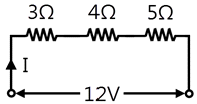
- 1
- 2
- 3
- 4
(정답률: 82%)

2. 전압과 전류의 측정방법에 대한 설명 중 틀린 것은?
- 전압계는 내부저항이 대단히 크며, 측정회로 에 병렬로 접속한다.
- 전류계는 내부저항이 대단히 작으며, 측정회로에 직렬로 접속한다.
- 배율기는 전압계의 측정범위를 넓히기 위하여 전압계에 직렬로 접속한다.
- 분류기는 전류계의 측정범위를 넓히기 위하여 전류계에 직렬로 접속한다.
(정답률: 47%)
3. 우리나라의 사용 전기의 주파수는 60Hz이다. 주기는 약 몇 초인가?
- 0.0083
- 0.0167
- 0.0334
- 0.0668
(정답률: 68%)
4. 정류회로에 부하를 연결했을 때 직류전압이 V [V], 부하를 개방했을 때 직류전압이 Vo [V]이면, 부하에 대한 전압변동률은 몇 %인가?
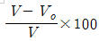
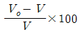
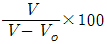
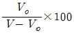
(정답률: 65%)
5. 단상 전파정류기의 DC 출력전압은 단상 반파정류기 DC 출력전압의 몇 배인가?
- 2배
- 3배
- 4배
- 5배
(정답률: 80%)
6. 반송파 전력이 10kW일 때, 변조도를 100%로 변조했을 경우, 파변조파 전력은 몇 kW인가?
- 5
- 10
- 15
- 20
(정답률: 37%)
7. 멀티바이브레이터에 대한 설명으로 틀린 것은?
- 부궤환의 일종이다.
- 고차의 고조파를 포함하고 있다.
- 회로의 시정수로 주가가 결정된다.
- 전원전압이 일부 변동해도 발진주파수는 큰 변동이 없다.
(정답률: 51%)
8. 전자유도에 의한 유도기전력의 방향을 표시하는 법칙은?
- 페러데이의 법칙
- 렌쯔의 법칙
- 오른나사의 법칙
- 비오-사바르의 법칙
(정답률: 59%)
9. 5㎌의 콘덴서에 1kV의 전압을 가할 때 축적되는 에너지는 몇 J인가?
- 1
- 2.5
- 5
- 10
(정답률: 63%)
10. TR을 A급 증폭기(활성영역)로 사용할 때 바이어스 상태를 옳게 표현한 것은?
- B-E : 순방향 Bias, B-C : 순방향 Bias
- B-E : 순방향 Bias, B-C : 역방향 Bias
- B-E : 역방향 Bias, B-C : 역방향 Bias
- B-E : 역방향 Bias, B-C : 순방향 Bias
(정답률: 76%)
11. 그림과 같은 궤환회로의 종류는?
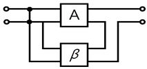
- 직렬전압궤환회로
- 병렬전류궤환회호
- 직렬전류궤환회로
- 병렬전압궤환회로
(정답률: 61%)
12. 진폭변조와 비교하여 주파수 변조에 대한 설명으로 가장 적합하지 않는 것은?
- 신호대 잡음비가 좋다
- 반향(echo)영향이 많아진다.
- 초단파 통신에 적합하다.
- 점유주파수 대역폭이 넓다.
(정답률: 53%)
13. 그림과 같은 회로에서 D1과 D2가 모두 차단 상태가 되는 조건은? (단, D1과 D2의 항복전압은 Vz이다.)
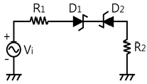
- -Vz ≦ Vi = Vz
- Vi = Vz
- -Vz ＜ Vi ＜ Vz
- -Vz ＞ Vi ＞ Vz
(정답률: 58%)
14. 듀티 사이클(duty cycle)이 0.1이고 주기가 20㎲인 펄스의 폭은 몇 ㎲인가?
- 0.2
- 1
- 2
- 4
(정답률: 59%)
15. 전지 내부에서 화학작용에 의하여 전압을 발생시켜 양극간의 전위차를 발생시켜 연속적으로 전류를 흘리게 하는 원동력이 되는 전압을 무엇이라 하는가?
- 구동력
- 회전력
- 기전력
- 유도전압
(정답률: 54%)
2과목: 전자계산기일반
16. 3분 동안 27000[J]의 일을 하였다면 그 전력은 몇 W인가?
- 15
- 100
- 150
- 200
(정답률: 78%)
17. 다음 진리표를 만족시키는 회로는?
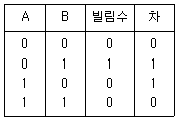
- 전가산기
- 반감산기
- EX-OR gate
- OR gate
(정답률: 52%)
18. 그림의 회로와 논리적 표현이 같은 것은?
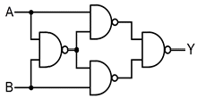
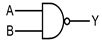
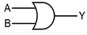
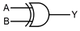
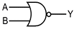
(정답률: 60%)
19. 운영체제의 종류가 아닌 것은?
- MS-DOS
- windows
- UNIX
- P-CAD
(정답률: 79%)
20. 컴퓨터의 기억장치로부터 명령이나 데이터를 읽을 때 제일 먼저 하는 일은?
- 명령지정
- 명령출력
- 어드레스 지정
- 어드레스 인출
(정답률: 64%)
21. 다음 중 기억장치의 기억장소를 지정하는 신호의 전송 통로는?
- control bus
- I/O port bus
- address bus
- data bus
(정답률: 59%)
22. 자기테이프의 기록밀도 단위는?
- BPI
- IPS
- IBG
- IRG
(정답률: 50%)
23. 다음 그림과 같이 A 레지스터(register)에 있는 자료에 대해 ALU에 의해 1`s complement(1의 보수) 연산이 이루어졌을 때 C register의 출력 결과는?
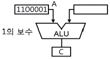
- 0011110
- 0101010
- 1111110
- 0011111
(정답률: 82%)
24. CPU에서 마이크로 동작이 순차적으로 일어나게 하 기 위해 필요한 것은?
- 교환 방법 상태
- 시간 발생기
- 클럭 발생기
- 제어신호
(정답률: 56%)
25. 베이직 프로그램에서 제곱근을 나타낼 때 사용되는 라이브러리 함수(library function)와 가장 관련 있는 것은?
- ABS(x)
- SQR(x)
- SGN(x)
- COS(x)
(정답률: 56%)
26. 10진수 256을 8진수로 변환 하면?
- 401
- 400
- 399
- 398
(정답률: 55%)
27. 전하가 방전되는 것을 보충하기 위한 재충전(refresh)작업이 필요한 기억 소자는?
- mask ROM
- EPROM
- SRAM
- DRAM
(정답률: 75%)
28. 주소지정방식 중 명령어의 피연산자 부분에 데이터의 값을 지정하는 방식은?
- 즉시 주소지정방식
- 절대 주소지정방식
- 상대 주소지정방식
- 간접 주소지정방식
(정답률: 61%)
29. 표준 신호 발생기가 갖추어야 할 조건 중 옳지 않는 것은?
- 출력 전압이 정확할 것
- 선택도의 지시가 정확할 것
- 누설이 적고 안정도가 높을 것
- 발진 주파수가 정확하고 파형이 양호할 것
(정답률: 48%)
30. 다음 중 분류기 없이 상당히 큰 전류까지 측정할 수 있고, 취급이 용이하지만 감도가 높은 것은 제작하기 어려운 계기는?
- 가동 코일형 전류계
- 전류력계형 전류계
- 가동 철편형 전류계
- 유도형 전류계
(정답률: 43%)
3과목: 전자측정
31. 길이의 참값이 1.2m 인 막대의 측정값이 1.212m이었다. 백분율 오차는 얼마인가?
- 0.212%
- 1%
- 1.2%
- 2.12%
(정답률: 61%)
32. 직류에서 마이크로파(1~3GHz)까지의 전력을 정밀하게 측정할 수 있는 계기는?
- 의사 부하법
- C-M 전력계
- C-C형 전력계
- 볼로미터 전력계
(정답률: 62%)
33. 다음 중 자동 평형식 기록계기의 특징에 대한 설명으로 옳지 않은 것은?
- 펜과 기록용지에서 생기는 마찰에 의한 오차를 피 하기 위한 것이다.
- 구동 에너지로 움직이게 하는 자동평형 서보기구를 사용한다.
- 영위법에 의한 측정원리를 이용한 것이다.
- 마찰과 관성이 증가하는 결점이 생긴다.
(정답률: 58%)
34. 다음 그림에서 내부저항 r[Ω]인 전류계에 분류가 저항 S[Ω]를 연결했을 때의 배율은?
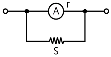
- r/(r+S)
- (r+S)/r
- S/(r+S)
- (r+S)/S
(정답률: 35%)
35. 오실로스코프의 휘도(Intensity)를 조정하는 전압은?
- 양극 전압
- 제어 그리드 전압
- 편향판 전압
- 캐소드 전압
(정답률: 65%)
36. 다음 설명의 ( )안에 들어갈 내용으로 옳은 것은?
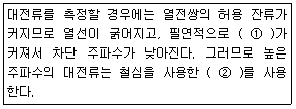
- ① 우연오차, ② 분배기
- ① 전위오차, ② 배율기
- ① 표피오차, ② 고주파 변류기
- ① 전위오차, ② 고주파 변류기
(정답률: 60%)
37. 다음 중 일반적으로 회전 자기장 또는 이동 자기장 내에 금속편을 놓으면 맴돌이 전류가 생겨서 금속편을 이동시키는 토크가 방생하는 원리를 이용한 계기는?
- 유도형 계기
- 전류력계형 계기
- 가동코일형 계기
- 가동철편형 계기
(정답률: 73%)
38. 디지털전압계에서 고주파 신호의 경우 변화가 너무 빨라서 정확한 변환이 불가능할 경우 A/D 변환기와 같이 사용되는 회로는?
- 파형 정형회로
- 샘플 홀드회로
- 게이트 제어회로
- D/A 컨버터회로
(정답률: 59%)
39. 다음 중 정현파를 구형파로 만드는데 사용되는 회로는?
- 적분회로
- 미분회로
- 클리핑회로
- 시미트 트리거 회로
(정답률: 70%)
40. 회로 내부 검류계 전류가 0이 되도록 평형시키는 영위법을 이용해서 미지 저항을 구하는 방법으로 주로 중저항 측정에 사용되는 브리지는?
- 캠벨(campbell)브리지
- 맥스웰(maxwell)브리지
- 휘스톤(wheatstone)브리지
- 코올라우시(kohlraush)브리지
(정답률: 60%)
41. 다음 중 고주파 가열에 이용되지 않는 손실은?
- 유전체 손실
- 줄열 손실
- 히스테리시스 손실
- 맴돌이전류(와전류) 손실
(정답률: 42%)
42. 서보 기구에 관한 일반적인 설명 중 옳지 않은 것?
- 조작력이 강해야 한다.
- 서보 기구에서는 추종속도가 느려야 한다.
- 유압서보 모터나 전기적 서보 모터가 사용된다.
- 전기식이면 증폭부에 전자관 증폭기나 자기증폭기가 사용된다.
(정답률: 68%)
43. 측심기로 물속에 초음파를 방사하여 2초 후에 반사파를 받았다면 물의 깊이는 얼마인가? (단, 바닷물 속의 초음파속도는 1527m/sec이다.)
- 763.5m
- 1527m
- 3⑤4m
- 6108m
(정답률: 68%)
44. 캐비테이션(cavitaiopn) 작용을 이용한 전자 응용 기기는?
- 초음파 용접기
- 초음파 세척기
- 초음파 의료기
- 초음파 가공기
(정답률: 73%)
45. 펄스레이더에서 전파를 발사하여 수신할 때까지 2.8㎲가 걸렸다면 목표물까지의 거리는 몇 m인가?
- 14
- 28
- 280
- 420
(정답률: 52%)
4과목: 전자기기 및 음향영상기기
46. 자동 온수기에서 제어대상은 다음 중 어느 것인가?
- 온도
- 물
- 연료
- 조절밸브
(정답률: 69%)
47. 다음 중 전장 발광 장치의 설명으로 옳지 않은 것은?
- 형광체의 미소한 결정을 유전체와 혼합하여 여기에 높은 직류전압을 가하면 지속적으로 발광한다.
- 전극으로부터 전자나 정공이 직접 결정에 유입되지 않는다.
- 반도체의 성질을 가지고 있는 물질(형광체를 포함)에 전장을 가하면 발광현상이 생긴다.
- 발광은 결정 내부의 인가 전압에 따라 높은 전장이 유기되어서 생기므로 고유형 EL이라 한다.
(정답률: 46%)
48. 다음 중 광학 현미경과 전자현미경의 차이점을 정확히 설명한 것은?
- 광학 현미경에서는 시료 위의 정보를 전하는 매개 체로 빛과 전자를 동시에 사용한다.
- 광학 현미경은 매개체로 빛과 광학렌즈를, 전자 현미경은 매개체로 전자 빔과 전자렌즈를 사용한다.
- 전자 현미경은 전자선을 오목렌즈에 이용하고, 광학 현미경은 블록렌즈를 사용한다.
- 전자 현미경은 볼록렌즈에 전자선을 사용하고, 광학 현미경은 오목렌즈에 전자선을 이용한다.
(정답률: 74%)
49. 다음 중 레이더에 사용되는 초단파 발진관으로 주로 사용되는 것은?
- magnetron
- waveguide
- cavity resonator
- duplexer
(정답률: 63%)
50. 다음 중 전자 냉동기는 어떤 효과를 응용한 것인 가?
- 줄 효과(joule effect)
- 지백 효과(seebeck effect)
- 톰슨 효과(thomson effect)
- 펠티어 효과(peltier effect)
(정답률: 92%)
51. 다음 그림은 수퍼헤테로다인 수신기의 구성도이다. ①과 ③을 순서대로 옳게 나열한 것은?
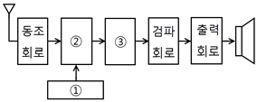
- 국부발진 회로, 중간주파증폭 회로
- 국부발진 회로, 혼합 회로
- 혼합 회로, 중간주파증폭 회로
- 혼합 회로, 저주파증폭 회로
(정답률: 75%)
52. 다음 중 화상의 질을 판단하기 위한 시험도형으로 일반적으로 사용되는 것은?
- 고스트
- 비월주사
- 순차주사
- 테스트패턴
(정답률: 71%)
53. 녹음기 회로에서 전체의 주파수 특성을 평탄하게 하기 위하여 주파수 보상을 하게 되는데, 녹음 시에는 어떤 주파수 특성을 보상하게 되는가?
- 고역 보상
- 저역 보상
- 중간 주파수 보상
- 잡음 보상
(정답률: 55%)
54. VTR에 사용되는 자기테이프에 기록되는 신호의 파장을 λ[㎝], 자기테이프 주행속도를 V[cm/sec], 신호의 주파수를 f[Hz]라 할 때, 이들의 관계식으로 옳은 것은?(오류 신고가 접수된 문제입니다. 반드시 정답과 해설을 확인하시기 바랍니다.)
- λ=f/√V [㎝]
- λ=V2/f [㎝]
- λ=V/f [㎝]
- λ=f/V [㎝]
(정답률: 31%)
55. 출력이 500W 인 송신기의 공중선에 5A의 전류가 흐를 때 복사저항은 몇 Ω인가?
- 10
- 20
- 30
- 40
(정답률: 62%)
56. 초음파 펄스를 금속 등의 물체에 발사하여 반사파를 관측함으로써 물체 내부의 흠, 균열, 불순물 위치와 크기를 알아내는 것은?
- 소나
- 초음파 가공기
- 초음파 세척기
- 초음파 탐상기
(정답률: 61%)
57. 국내의 지상파 아날로그 컬러텔레비전 방식은?
- PAL 방식
- MPEG 방식
- NTSC 방식
- SECAM 방식
(정답률: 36%)
58. 일렉트로 루미네센스(Electro Luminescence, EL)란 무엇인가?
- 반도체에 열을 가하면 기전력이 생기는 현상
- 반도체에 압력을 가하면 기전력이 생기는 현상
- 반도체에 비추는 빛의 양에 따라 전류를 제어하는 현상
- 형광체를 포함한 반도체에 전기장을 가하면 빛이 방출되는 현상
(정답률: 57%)
59. 테이프를 헤드에 밀착시켜 레벨 변동이나 고역 저 하의 원인이 되는 스페이싱 손실을 줄이는 기구는?
- 캡스턴(capstan)
- 압착 패드(pressure pad)
- 핀치 롤러(pinch roller)
- 테이프 가이드(tape guide)
(정답률: 62%)
60. 센서의 명명법에서 X형 센서로 표시하지 않는 것은?
- 변위 센서
- 속도 센서
- 열 센서
- 반도체형 가스 센서
(정답률: 62%)
이유는 전류의 크기는 회로 전체에서 일정하다는 것입니다. 따라서, 회로의 어느 지점에서 전류를 측정해도 동일한 값이 나와야 합니다.
따라서, 전류계를 A와 B 중 어느 지점에 연결하더라도 전류의 크기는 동일하며, 그 값은 1A입니다.